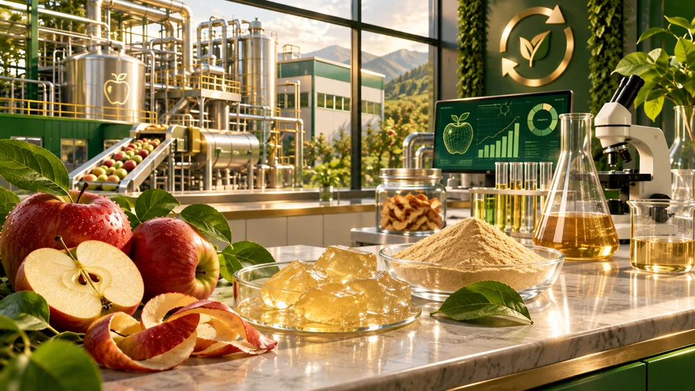

Түлкібас · Ғылыми-зерттеу жобасы
PECTIN
SMART LAB
Агроөнеркәсіптік шикізатты кешенді өңдеудің экономикалық тиімділігін математикалық модельдеу арқылы оңтайландыру (пектин өндірісі мысалында)
Цифрлық зертхананы ашу →Зерттеуден практикаға
Жеті цифрлық құрал
Өндірістік технологияны зерттеңіз, есептеңіз және шешім қабылдаңыз.
7Цифрлық құрал
10 000Монте-Карло сценарийі
3DӨндірістік макет
E440Пектин
Ғылыми негіздеме
Табиғи шикізаттан қосылған құнға
Жоба Қазақстанның пектин импортына тәуелділігін азайту мүмкіндігін, жергілікті алма сығындысын кешенді өңдеуді және өндірістің экономикалық тиімділігін зерттеуге бағытталған.
ЭкономикаВалюталық және логистикалық тәуелділік тәуекелдерін азайту.
ШикізатТүлкібас және оңтүстік өңірлердің алма шаруашылығы әлеуеті.
ЭкологияОрганикалық қалдықтарды кәдеге жарату, ластану тәуекелін төмендету.
ҚолжетімділікФермерлер мен кәсіпкерлер үшін қарапайым цифрлық есептеу құралдары.
Жоба мәтініндегі импорт үлесі мен өндіріс көлеміне қатысты сандық тұжырымдар статистикалық дереккөздермен қосымша расталуы тиіс.

Зерттеу күнделігі
Өндіріс орнындағы зерттеу
Жоба материалдары: алма өңдеу кәсіпорны, дайын өнімдер және өндірістік жабдықтар.